الدليل الشامل لمنسقي الجودة في الأقسام ورؤساء الأقسام ووكيل الجودة:
من التقييم الذاتي ورفع الشواهد حتى التقرير النهائي وتقارير الكلية.
منصة رقمية متكاملة لإدارة أعمال الجودة وتقييم تحقق متطلبات نظام جودة التدريب (المستوى الثاني) بمعاييره الستة وأعماله الأسبوعية، دون ورق ودون تكرار.
تجمع المنصة في مكان واحد ما كان موزعاً بين ملفات Excel والبريد والمجلدات: التقييم الذاتي لكل متطلب، والشواهد، والنماذج الإلكترونية للخطط والتقارير، ومهام أعمال الجودة الأسبوعية، وخطط التحسين، ثم تجمع ذلك تلقائياً في لوحة مؤشرات وتقرير نهائي وتقارير على مستوى الكلية بنفس نماذج الإدارة.
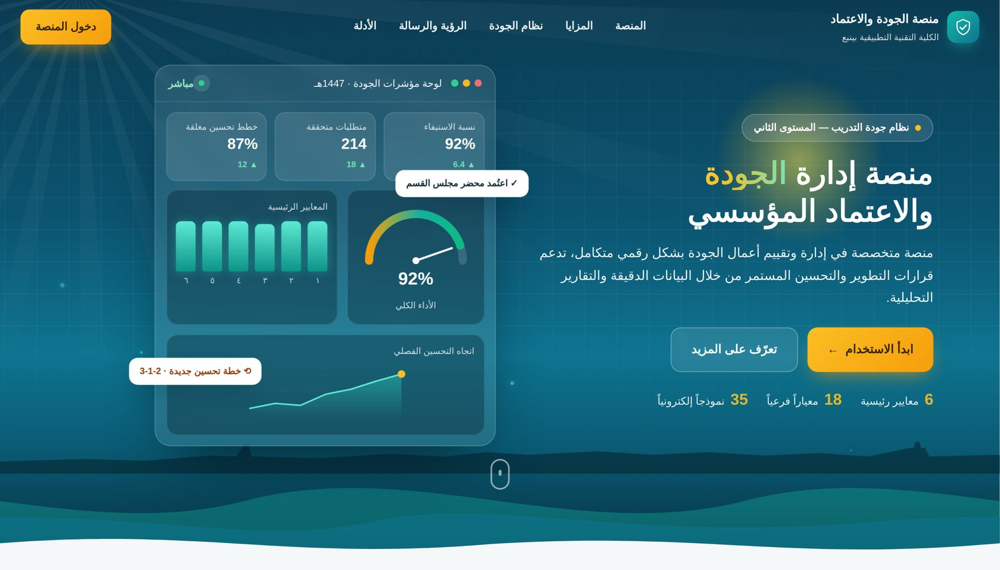
ما يعبّئه القسم في نموذج أو مهمة يظهر تلقائياً شاهداً للمتطلب المرتبط، وفي لوحة المؤشرات، وفي تقارير الكلية؛ فلا يُطلب الشيء نفسه مرتين.
المتطلبات الثمانية والأربعون موزعة على المعايير الستة ومعاييرها الفرعية الثمانية عشر، وكل نموذج أو مهمة أو خطة تحسين مربوطة بمتطلبها.
تُحفظ الملفات في مجلدات OneDrive / SharePoint التابعة للمؤسسة ويُرفق رابطها في المنصة؛ وتُرفض الروابط من خارج النطاقات المعتمدة.
كل تقدير ونموذج يمر بمراحل محددة (القسم ← رئيس القسم ← التدقيق ← الاعتماد النهائي)، وكل تغيير محفوظ في سجل التدقيق بالاسم والوقت.
| الدور | ما يقوم به في المنصة |
|---|---|
| منسق الجودة بالقسم | التقييم الذاتي للمتطلبات، إرفاق الشواهد، تعبئة النماذج الإلكترونية، تسليم مهام أعمال الجودة، إعداد خطط التحسين، ورفعها للاعتماد. |
| عضو هيئة التدريب | المشاركة في تعبئة التقديرات والنماذج وإرفاق الشواهد ضمن قسمه. |
| رئيس القسم | مراجعة ما يرفعه القسم واعتماده أو إعادته بملاحظة، واعتماد النماذج. |
| وكيل الجودة | إعداد الدورة والتقويم ومجلدات الشواهد ونطاق المتطلبات، إدارة أعمال الجودة، المتابعة، الاعتماد النهائي، التقرير النهائي وتقارير الكلية والتصدير، وإدارة المستخدمين. |
| مدقق الجودة | تدقيق التقديرات المعتمدة من الأقسام وإنهاء التدقيق أو الإعادة. |
| المقيّم الخارجي | إصدار الحكم على التقييم الذاتي (منطبق / غير منطبق / غير كافٍ) مع التوصية. |
من الصفحة الرئيسية اضغط «دخول المنصة» وسجّل الدخول بحساب المؤسسة. يظهر في أعلى كل صفحة شريط فيه:
وعلى يسار الشريط قائمة الدورة (مثل: التقييم الذاتي 1447هـ) واسمك وزر الخروج. يظهر لكل مستخدم ما يخص صلاحيته وقسمه فقط.
خطوة بخطوة: كيف تقيّم متطلبات قسمك، وتعبّئ النماذج، وتسلّم أعمال الجودة الأسبوعية، وتتابع خطط التحسين.
صفحة العمل الرئيسية للقسم: قائمة بمتطلبات القسم مجمّعة حسب المعيار الفرعي، وعلى يسارها تفاصيل المتطلب المختار.
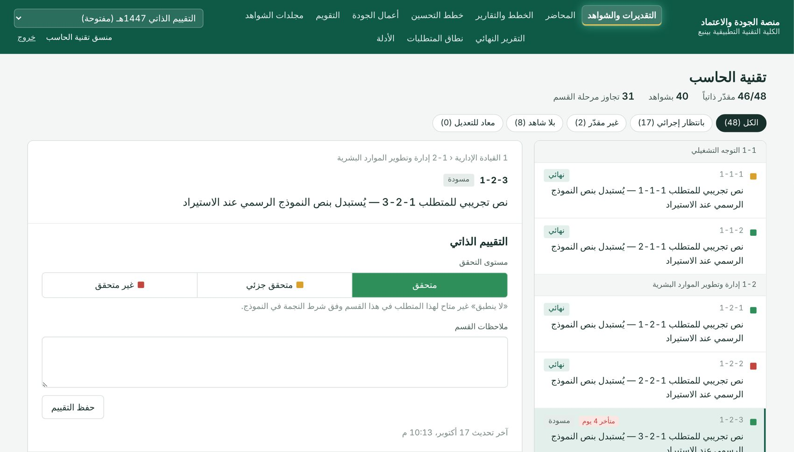
استخدم المرشحات أعلى القائمة (غير مقدّر، بلا شاهد، معاد للتعديل…) للوصول السريع لما يحتاج عملاً. يظهر بجانب المتطلب موعد إنجازه إن حدده وكيل الجودة.
اختر أحد المستويات الأربعة ثم «حفظ التقييم»:
«لا ينطبق» متاح فقط للمتطلبات التي يسمح بها النموذج الرسمي (شرط النجمة).
اضغط «فتح مجلد الشواهد» ليفتح مجلد قسمك على OneDrive/SharePoint، ارفع الملف هناك، ثم انسخ رابطه وأرفقه بالمتطلب. الشواهد المولّدة من النماذج الإلكترونية وأعمال الجودة تُربط تلقائياً.
بعد اكتمال التقييم والشاهد اضغط «رفع للاعتماد» فينتقل لرئيس القسم. لا يمكن تعديل الشواهد بعد الرفع إلا إذا أُعيد التقدير للقسم.
بديل ملفات Excel: لكل متطلب يحتاج خطة أو تقريراً نموذج إلكتروني بنفس أعمدة النموذج الرسمي وحساباته (النسب والمجاميع والمقارنات تُحسب تلقائياً).
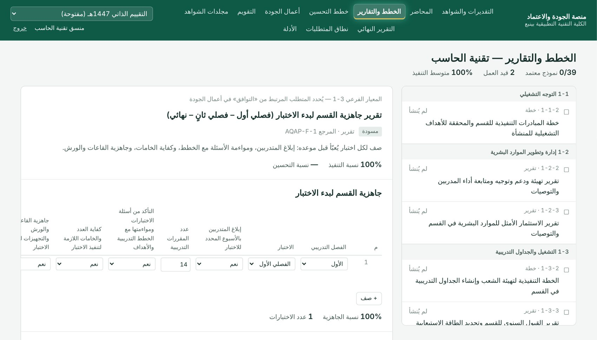
اختر النموذج من القائمة واضغط «إنشاء النموذج» (نموذج واحد لكل قسم في الدورة).
الخطط لها مرحلة تخطيط يعتمدها رئيس القسم، ثم مرحلة متابعة تُحدَّث خلال العام. التقارير تُعبّأ في مرحلة المتابعة مباشرة.
زر «+ صف» يضيف سطراً جديداً؛ والمؤشرات أسفل كل جدول (مثل نسبة الجاهزية أو نسبة الأقل من 60٪) تُحسب فوراً.
عند اعتماد النموذج تولّد المنصة نسخة PDF رسمية منه وتربطها شاهداً للمتطلب تلقائياً، ويمكن إرفاق شواهد داعمة بالنموذج.
| مجموعة النماذج | أمثلة |
|---|---|
| الاختبارات | تقرير جاهزية القسم لبدء الاختبار · تقرير تنفيذ الاختبار · تحليل نتائج المتدربين (مع مقارنة الفصلي الأول والثاني تلقائياً) · الإجراءات التحسينية |
| جودة المخرجات | خطط تحسين نتائج جودة المخرجات · متطلبات وتهيئة المتدربين لقياس جودة المخرجات |
| التدريب | ملف المدرب وتوصيف المقرر (مع نموذج رئيس القسم والتدقيق) · منصة المهارات العملية · استراتيجيات التدريب |
| التشغيل والبيئة | الخطط التنفيذية · القبول والجداول · الصيانة والنظافة والسلامة · المخاطر · المبادرات · مؤشرات الأداء |
جدول متابعة أعمال الجودة للفصل (الأسبوع 3 إلى 19) بمواعيد محددة. كل مهمة مربوطة بالمعايير الفرعية والمتطلبات، وكثير منها مربوط بنموذج إلكتروني.
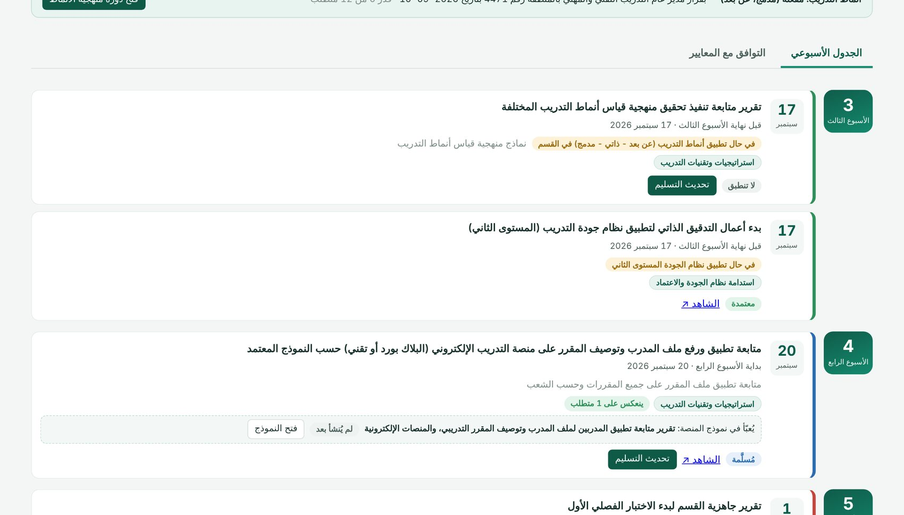
تظهر لكل مهمة موعدها والأيام المتبقية، وحالتها: لم تُسلَّم، مُسلَّمة، معتمدة، مُعادة (مع ملاحظة الوكيل)، متأخرة، أو لا تنطبق.
اضغط «فتح النموذج»، عبّئه واعتمده، ثم ارجع واضغط «تسليم» واختر «التسليم من نموذج المنصة»؛ فيُستخدم الـPDF المعتمد شاهداً دون أي رفع إضافي.
ارفع الملف في مجلد الشواهد وألصق رابطه في نافذة التسليم مع ملاحظة إن لزم. يُربط الشاهد تلقائياً بالمتطلبات المحددة للمهمة في مساحة القسم.
إذا لم تنطبق المهمة على القسم اختر «المهمة لا تنطبق على القسم» واكتب السبب. مهام أنماط التدريب تظهر «لا تنطبق» تلقائياً ما لم تعتمد الكلية نمط تدريب.
تُنشأ خطة التحسين تلقائياً لكل متطلب عليه ملاحظة بعد اعتماده النهائي: غير منفذ أو منفذ جزئياً، أو الشاهد غير متوفر أو غير كافٍ، أو حكم المقيّم غير منطبق.
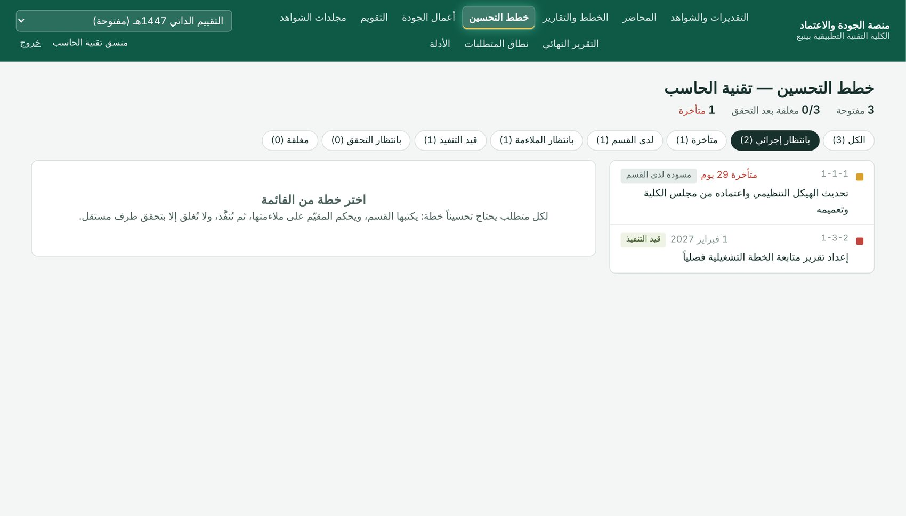
الإجراء، والمسؤول عن التنفيذ، وتاريخ الإنجاز، ثم ارفعها ليحكم وكيل الجودة على ملاءمتها (مناسب / غير مناسب / غير كافٍ).
بعد التنفيذ أرفق شاهد الإنجاز وحدّث الحالة إلى «منجزة»، فيتحقق منها طرف مستقل ثم تُغلق. الخطط المتأخرة تظهر باللون الأحمر لوكيل الجودة.
إنشاء محاضر اجتماعات القسم واللجان إلكترونياً (الحضور، البنود، التوصيات)، واعتمادها، ثم تُحفظ PDF وتُربط بمتطلبها مثل محاضر مجلس القسم ولجان القياس.
مواعيد إنجاز المعايير الفرعية والمتطلبات التي يرفعها وكيل الجودة، مع شريط يبيّن ما رفعه قسمك في الموعد، وتنبيه «يقترب» و«متأخر».
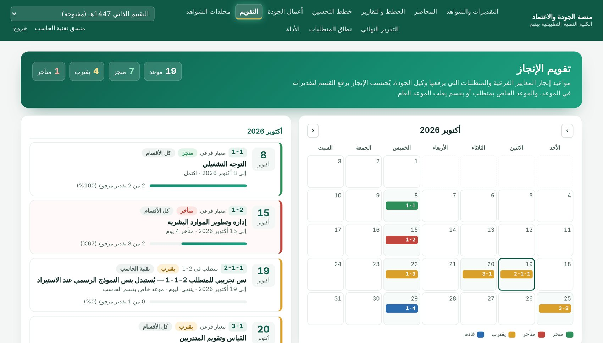
المراجعة الأولى لكل ما يرفعه القسم قبل أن يصل لوكالة الجودة.
في «التقديرات والشواهد» اختر مرشح «بانتظار إجرائي» لتظهر التقديرات المرفوعة من القسم.
«اعتماد» ينقل التقدير لمرحلة التدقيق، و«إعادة للقسم» تتطلب كتابة سبب يراه المنسق عند المتطلب.
في «الخطط والتقارير» تظهر النماذج المرفوعة؛ اعتماد الخطة يفتح مرحلة متابعتها، واعتماد التقرير يولّد شاهده الرسمي.
تابع تنفيذ خطط القسم ومواعيدها، فالخطط المتأخرة تُحسب على القسم في لوحة المؤشرات.
إعداد الدورة، وإدارة أعمال الجودة، والمتابعة، والاعتماد النهائي، والتقارير على مستوى الكلية.
| الصفحة | ما تُعده فيها |
|---|---|
| نطاق المتطلبات | استبعاد المتطلبات التي لا تنطبق على تخصص قسم (مثل الإرشاد أو المشروع للدراسات العامة)، فتُخفى من القسم ولا تدخل في نسبه. |
| التقويم | إضافة مواعيد إنجاز لمعيار فرعي أو متطلب، لكل الأقسام أو لقسم بعينه، أو رفعها دفعة واحدة من ملف Excel/CSV بالقالب المتاح للتنزيل. الموعد الأخص يغلب العام. |
| مجلدات الشواهد | سياسة الإرفاق (روابط فقط / ملفات / الاثنان)، والنطاقات المعتمدة مثل tvtc-my.sharepoint.com، ورابط مجلد لكل قسم ومعيار؛ مع فحص الروابط المعطلة قبل الزيارة. |
| المستخدمون | إضافة المستخدمين وإسناد الأدوار (منسق، رئيس قسم، مدقق…) لكل قسم، وإيقاف الحسابات. |
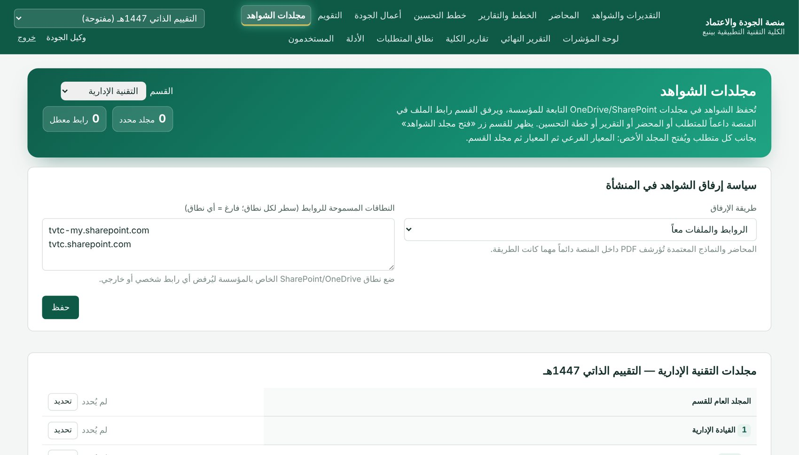
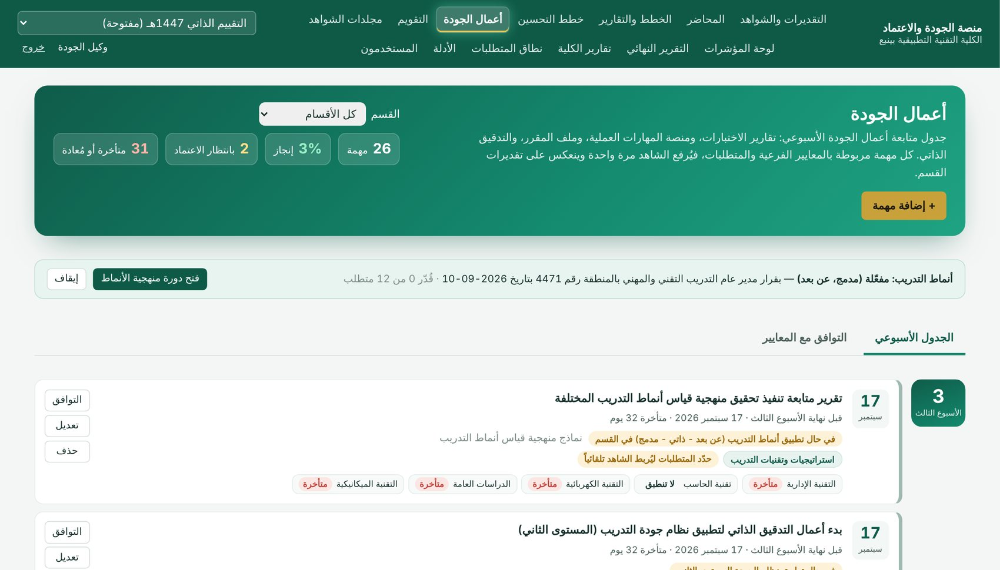
زر «تحميل جدول أعمال الجودة» مع تاريخ بداية الفصل ينشئ 26 مهمة بمواعيدها المحسوبة وربطها المقترح؛ ويمكن إضافة مهمة أو تعديلها أو حذفها.
زر «التوافق» على كل مهمة يحدد المعايير الفرعية والمتطلبات التي يغطيها شاهدها؛ وتبويب «التوافق مع المعايير» يعرض أين يتقاطع الجدول مع المنصة.
اضغط على اسم القسم في المهمة لفتح الشاهد، ثم «اعتماد» أو «إعادة للقسم» مع ملاحظة.
لا تُفعَّل منهجية قياس أنماط التدريب إلا بعد قرار صاحب الصلاحية: سجّل القرار (الجهة، الرقم، التاريخ، الأنماط المعتمدة) فتُنشأ دورة المنهجية بمتطلباتها الاثني عشر. وعند إيقاف القرار تعود مهامها «لا تنطبق» دون فقد ما أُنجز.
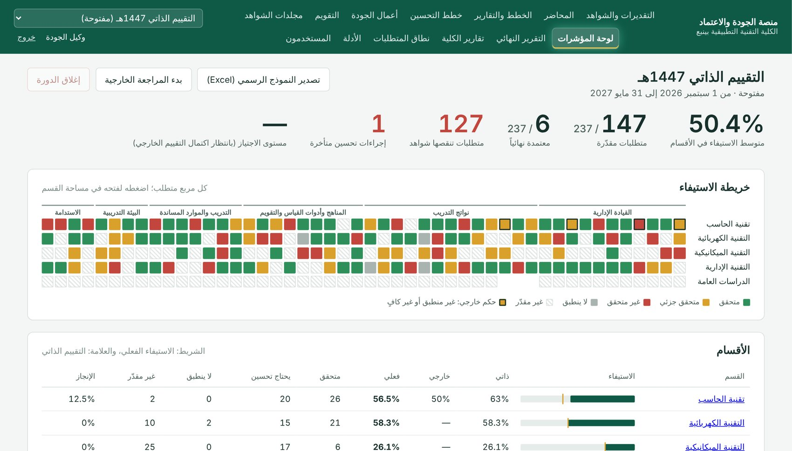
تعرض اللوحة: متوسط الاستيفاء، والمتطلبات المقدّرة والمعتمدة، والمتطلبات التي تنقصها شواهد، وإجراءات التحسين المتأخرة، وخريطة الاستيفاء (مربع لكل متطلب في كل قسم بلون حالته، اضغط عليه لفتحه)، وجدول الأقسام، وأفضل وأضعف المعايير الفرعية، وأحكام عدم الانطباق.
في كل مرحلة يمكن «الإعادة للقسم» مع سبب. بعد «الاعتماد النهائي» تتولد خطط التحسين للمتطلبات التي عليها ملاحظات. وعند بدء المراجعة الخارجية يسجّل المقيّم حكمه (منطبق / غير منطبق / غير كافٍ) وتوصيته، ويُحتسب التقدير الفعلي منهما.
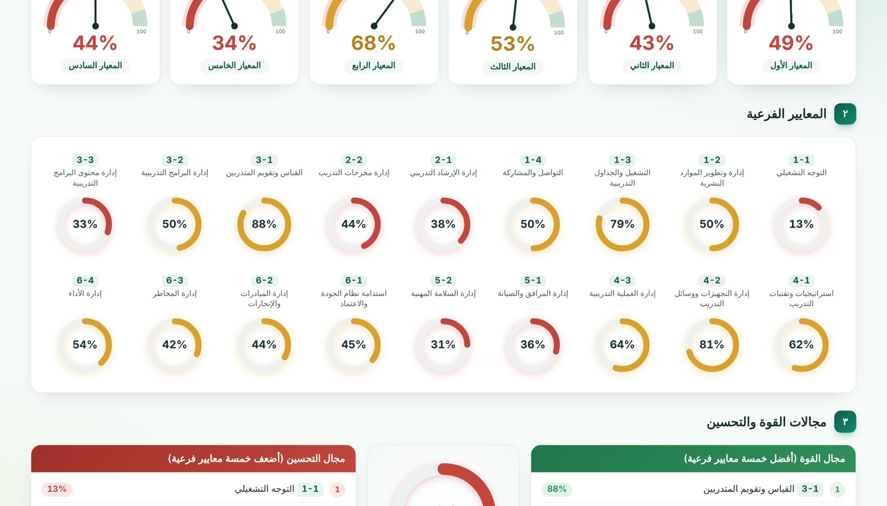
التقرير النهائي للكلية أو لأي قسم: عدادات المعايير الستة مقابل حد الاجتياز 89.5٪، والمعايير الفرعية، والنسبة العامة، ومجالات القوة والتحسين، وأعداد المتطلبات حسب النتيجة، والمتطلبات التي تتطلب خطة تحسين. ويُطبع مباشرة من المتصفح.
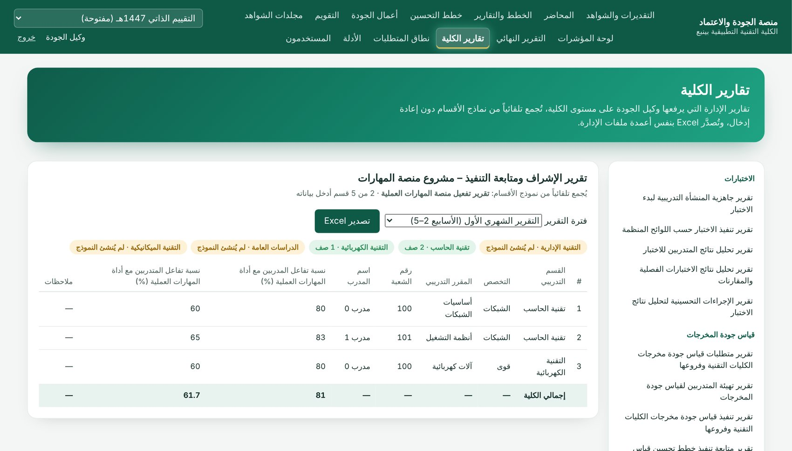
| التصدير | الناتج |
|---|---|
| تقارير الكلية (15 تقريراً) | الاختبارات، وجودة المخرجات، وملف المدرب، ومنصة المهارات، ومتابعة نظام الجودة، وأنماط التدريب، وزيارات التقييم الخارجي — كلٌّ يُصدَّر Excel داخل ملف الإدارة الأصلي بشعار المؤسسة وترويسته، مع المنطقة والفصل والعام. |
| تصدير النموذج الرسمي | زر «تصدير النموذج الرسمي (Excel)» في لوحة المؤشرات يعبّئ «نموذج العمل الشامل» بكل الأقسام والتقديرات وخطط التحسين؛ وإن لم يتوفر القالب على الخادم يصدّر ملفاً منسقاً بأربع أوراق. |
ملخص ما يحدث خلال الفصل التدريبي، ومن يفعل ماذا ومتى.
| المرحلة | وكيل الجودة | القسم |
|---|---|---|
| بداية الفصل | فتح الدورة، المستخدمون، نطاق المتطلبات، مجلدات الشواهد، التقويم، تحميل جدول أعمال الجودة | مراجعة متطلبات القسم ومواعيدها وفتح مجلد الشواهد |
| الأسابيع 3–19 | مراجعة تسليمات أعمال الجودة ومتابعة لوحة المؤشرات وتقارير الكلية | تعبئة النماذج وتسليم المهام الأسبوعية والتقييم الذاتي وإرفاق الشواهد |
| قبل الزيارة | فحص الروابط، بدء التدقيق، الاعتماد النهائي | استكمال الشواهد الناقصة ومعالجة ما أُعيد للقسم |
| بعد التقييم | المراجعة الخارجية، التقرير النهائي، التصدير الرسمي، إغلاق الدورة | إعداد خطط التحسين وتنفيذها وإرفاق شواهد الإنجاز |
| السؤال | الإجابة |
|---|---|
| رفعت شاهداً في أعمال الجودة، هل أرفعه مرة أخرى للمتطلب؟ | لا. يُربط تلقائياً بالمتطلبات المحددة للمهمة ما دام التقدير لم يُرفع للاعتماد بعد. |
| لماذا رُفض رابط الشاهد؟ | لأنه من خارج النطاقات المعتمدة للمؤسسة أو لا يبدأ بـ https. ارفع الملف في مجلد OneDrive/SharePoint التابع للمؤسسة. |
| لا أجد متطلباً في قائمة قسمي. | قد يكون مستبعداً من نطاق قسمك بقرار وكالة الجودة (يظهر «لا ينطبق» في التصدير). |
| لا أستطيع تعديل التقييم. | التقدير مرفوع أو معتمد؛ يُعدَّل فقط بعد إعادته للقسم. |
| مهام أنماط التدريب تظهر «لا تنطبق». | لم يُسجَّل قرار اعتماد نمط تدريب للكلية؛ تُفعَّل تلقائياً بعد تسجيله. |
| لا تظهر آخر التحديثات في الصفحة. | اضغط Ctrl + Shift + R لتحديث الصفحة من الخادم. |